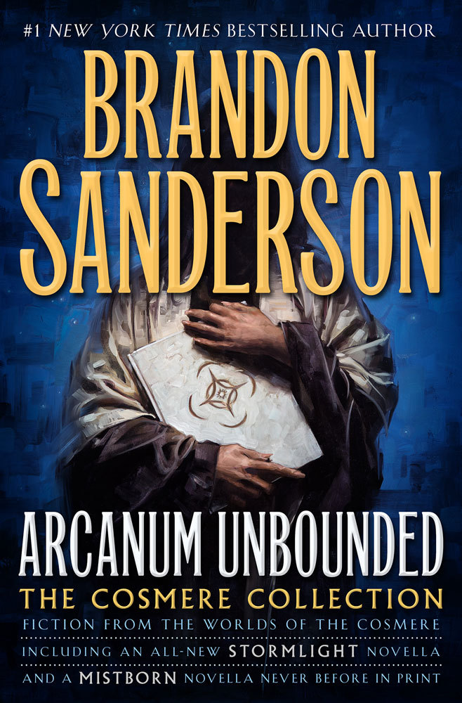

Arcanum Unbounded: The Cosmere Collection
- Read on 2017-08-06
- Rating: ️️️️️
- Format: 🎧 (22 hours 31 minutes)
The fact that one brain can come up with (and contain) all of these various interconnected worlds is astounding... and to not have them feel like they're completely random and stupid all at the same time. I would appreciate it if you didn't call me a Brandon Sanderson fan-boy. I admit his writing style resonates with me, and I enjoy the fantasy worlds he has created. I had already read the majority of the stories in this collection, but I revisited each of them, and was not disappointed. I'm taking a star off because this isn't a book a normal person should just pick up and read. If you _do_ read something from here, and enjoy it, try some of the other related books.
- Prior: Hillbilly Elegy
- Next: Good Omens